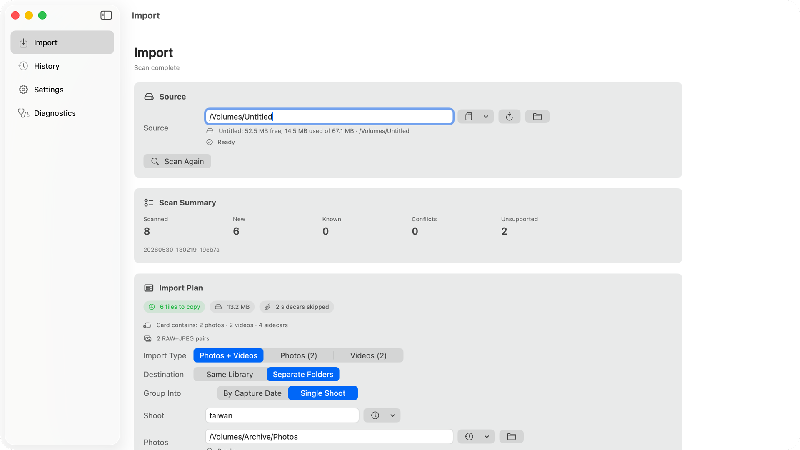
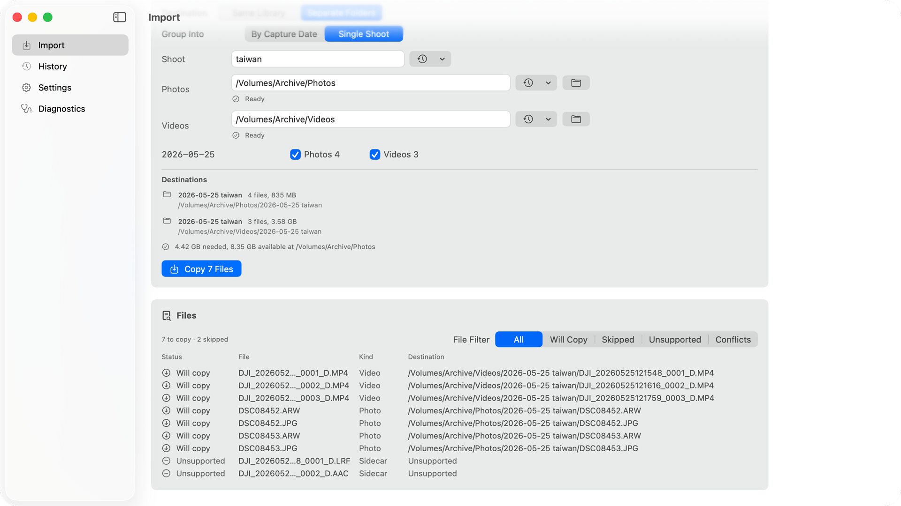

Preview before copying
Scan the card, review what will copy, and inspect destination folders before starting the import.
Finish messy card handoffs with confidence.
Free, open source, signed and notarized. Requires an Apple Silicon Mac running macOS 14 or newer.

Watch a real mixed-card import from scan to Finder.

Designed for repeat card imports, not one-off file browsing.
Use the automatic card prompt or manually select a mounted card, folder, or test source.
Choose photos, videos, or both. Send them to one library or separate folders.
Check new files, already-copied originals, camera metadata sidecars, conflicts, and required space in one screen.
After import, repeat scans show originals you already copied so the same card does not duplicate work.
SD Import keeps the checks that matter visible before files move.
Scan the card, review what will copy, and inspect destination folders before starting the import.
Reinsert the same card without duplicating originals that SD Import has already imported.
Camera support files stay visible in the preview, so sidecars and unsupported files do not disappear into the copy silently.
Mixed media, support files, repeated card names, and copied originals stay explicit.
Releases are signed, notarized DMGs on GitHub. Sparkle handles in-app updates.